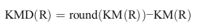
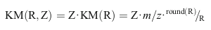
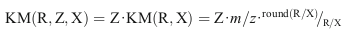
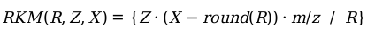
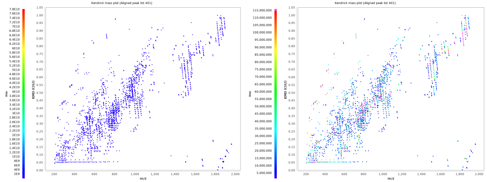
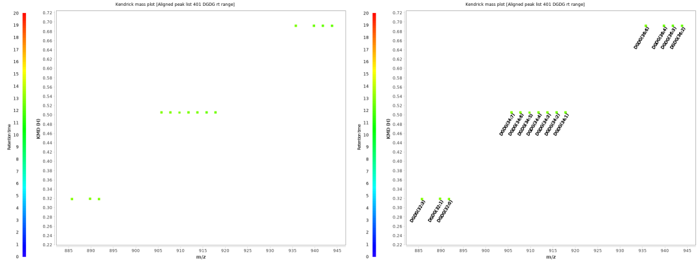

Formula for Kendrick mass and Kendrick mass defect


Functionality
This module allows to create 2 and 3 dimensional Kendrick mass plots. All possible feature characteristics can be plotted in a third dimension. The plot window has a toolbar on the right side. The first button changes the size of the blocks, the second toggle the background color between black and white, the third toggles the visibility of a grid and the fourth adds annotations for identified features.

Shifting
The toolbar on the right side includes methods to manipulate the Kendrick plot.
One possibility is to shift KMDs. This is useful for extremely high or low KMD values.

Charge dependent Kendrick mass plots
Fouquet et al. have shown how to overcome splits in Kendrick mass plots, which are caused by multiply charged ions. Considering the charge for the calculation of the KM leads to clustering of features.


Resolution enhanced Kendrick mass defect plots
Fouquet and Sato have shown how a fractional base unit (Divisor) can enhance the resolution of Kendrick mass plots.


Combining charge and fractional base unit (Divisor)
If both charge and fractional base unit are changed, the following equation is used:


Remainders of Kendrick masses (RKM)
Another option to increase the resolution of Kendrick mass plots is the by Fouquet et al. proposed concept of RKM (remainders of Kendrick masses). By clicking the KMD/RKM button in the toolbar on the right side, KMDs are transformed to RKMs.


Combining charge and fractional base unit (Divisor) for Kendrick plots with RKM
If both charge and fractional base unit are changed, the following equation is used:


Further features
A double click on a data point opens a frame with an overview of the selected feature.

A rainbow or monochrome color coded paint scale can be used for the third dimension. Depending on the dataset, a black background of the plot may result in a better contrast.

The contrast can be further improved by removing extremely high or low values from the paint scale. This can be achived using the "Range for z-axis scale" parameter. Features above the limit are displayed in magenta, features below the limit are displayed in black.

Furthermore, identified features can be labeled using the last button of the toolbar on the right.
